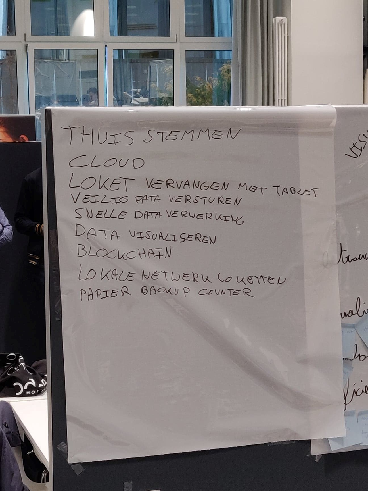
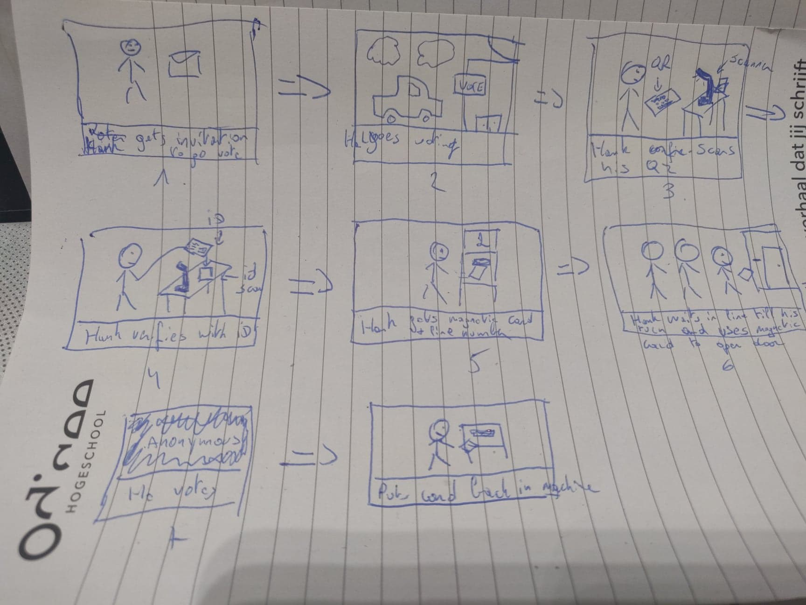
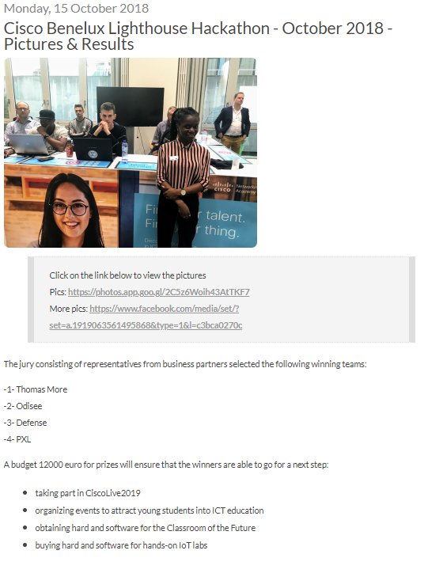
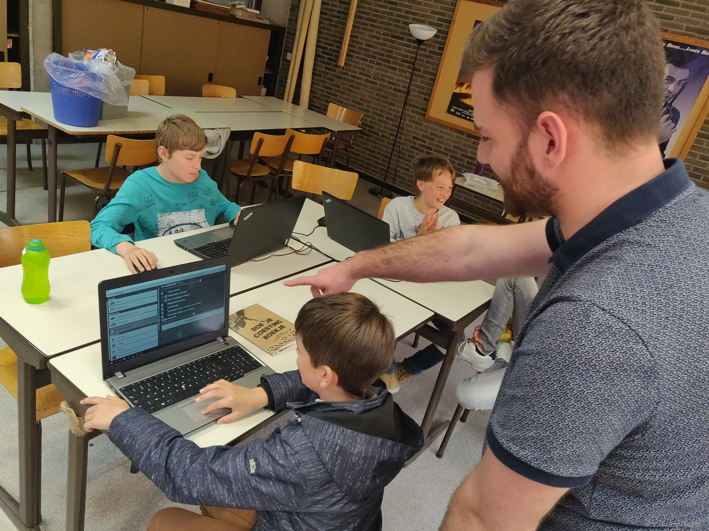
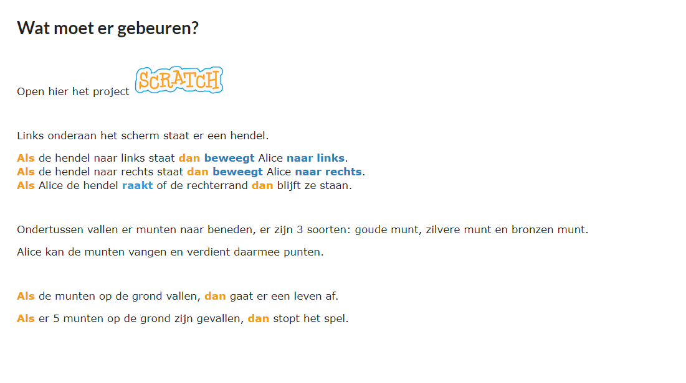
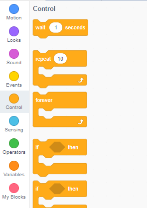
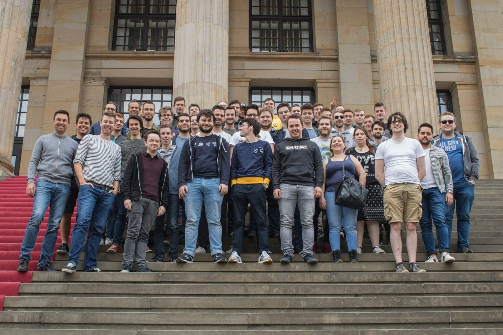
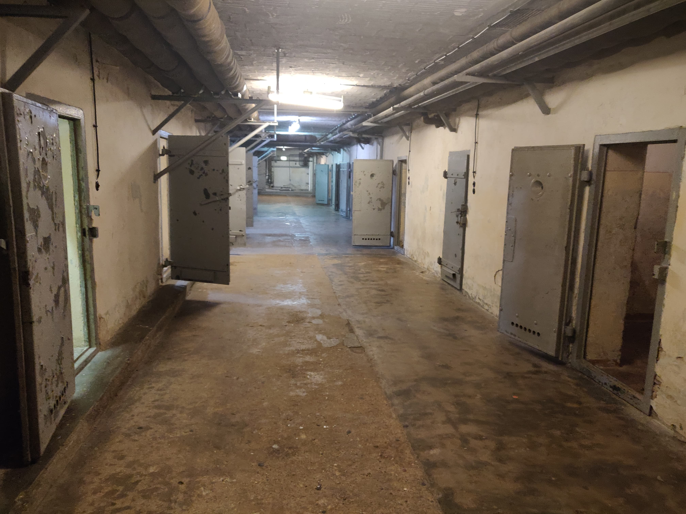

Ik heb een selectie gemaakt van vier activiteiten waar ik hieronder een verslag van heb gemaakt. Bij elke activiteit heb ik ook nog een persoonlijke reflectie.
Innovatieroute IoT: uitwerken van case
Voor de innovatieroute IoT gingen we in plaats van een gewone case uit te werken meedoen aan een Hackathon van Odisee Hogeschool en Cisco. Hier was het de bedoeling om met een team een onbekend probleem in drie dagen op te lossen. We waren met een klein team van PXL-studenten verspreid over verschillende domeinen. (IT: Application development – IT: systems & network – Electronics & ICT)
Ons team bestond uit 6 leden:
• Bryan Honof (Electronics & ICT)
• Chris Vandenhoudt (IT: Systems & network)
• Jan Peters (IT: Systems & network)
• Maxim Rudenko (IT: Systems & network)
• Gijs Claes (IT: Application development)
• Christof Nies (IT: Application development)
Kern
Zoals vermeld in de omschrijving hebben we met een klein team PXL studenten deelgenomen aan de Cisco Lighthouse hackathon die in het teken stond van IoT. Deze vond plaats op de Odisee Hogeschool campus te Brussel. We hadden allemaal nog nooit aan een hackathon meegedaan en wisten ook niet wat het probleem ging zijn wat we moesten oplossen. We wisten enkel dat het in het thema stond van de gemeenteverkiezingen.
Als eerste kregen we op de hackathon dus een uitleg over wat de bedoeling was voor de komende 3 dagen en wat het te oplossen probleem ging zijn. Dat probleem was niet een focus op iets gedetailleerd maar op een groot geheel. Het gaan stemmen en het digitaal stemmen. Op sommige plekken werd er nog niet digitaal gestemd en sommige mensen wantrouwen dit systeem een beetje. Dan is er ook nog het probleem dat er veel bijzitters moeten zijn. Hier moesten wij over gaan brainstormen wat mogelijke problemen waren en hoe we dit konden oplossen. Iets wat niet gemakkelijk was aangezien wij nog nooit moesten gaan stemmen.
Eerst zijn we begonnen met brainstormen over mogelijk problemen die een kiezer of bijzitter zou kunnen tegenkomen. Na even te denken zijn we uiteindelijk op een aantal topics uitgekomen die te zien zijn op de foto. 
Aangezien ze ons verteld hadden dat ze via het huidige systeem met USB-sticks werken waar de resultaten opstaan, wat wij absurd vonden, hadden we gekozen om verder te gaan met een veilige manier van data te versturen. Hierbij wouden we bekijken of het mogelijk was om data te versturen over het netwerk waar momenteel ook medische data over verstuurd wordt.
Na veel overleggen binnen het team en het raadplegen van de adviseurs, hebben wij op de tweede dag s ’avonds beslist om heel ons idee om te gooien. Aangezien we zelf niet overtuigd waren van de haalbaarheid van ons idee, leek het ons ook een betere keuzen. Ook omdat we ons eigen idee nog moeten pitchen, dan kom je beter af met iets waar je volledig achterstaat.
We wouden het dit keer eenvoudiger aanpakken, minder ingewikkeld en toch iets wat een grote impact zou kunnen hebben. Hiervoor zijn we verder gegaan op het idee dat er te veel bijzitters aanwezig moeten zijn. Niemand gaat graag zijn vrije dag besteden aan het loket.
Ons idee was dat de stembrief een Qr code bevat, deze zou dan moeten ingescanned worden aan het loket. Hierbij lieten ze ook hun ID scannen. Dit wouden we allebei doen door een machientje, zodat hier al niemand voor ingezet moest worden. Als de QR-Code en ID-kaart een correcte match zijn, krijgt de stemmer automatisch een kaart die hij in het loket in de machine kan stoppen waarna hij zijn stem kan uitbrengen. Daarna stopt hij zijn kaart terug in een machine zodat deze opnieuw gebruikt kan worden. Dit is allemaal te zien op de foto hieronder. Deze kladversie van ons concept moesten we uitwerken voor de hackathon.  Helaas zijn we hierbij alleen maar tot een concept gekomen en hebben we geen proof of concept kunnen uitwerken.
Op de laatste dag zijn alle teams in 2 groepen van 12 verdeeld, hier moesten we per team een pitch brengen. De 2 winnaars van elke groep mochten door naar de finale waar een jury van Cisco-managers aanwezig was. Dankzij onze uitstekende pitcher Bryan zijn we tot de finale geraakt waar we gestrand zijn op een 4e plek.
Reflectie
Op het begin was het moeilijk om te starten omdat wij nog nooit aan een hackathon hadden meegedaan en vrij weinig kennis hadden over het “topic politieke verkiezingen en het gaan stemmen/bijzitten”. Daarom hebben wij wat adviseurs geraadpleegd die er rondliepen, zij hebben ons in goede banen geleid om een goede start te maken. Ook hadden we een bundel gekregen die stappen bevatte die we konden volgen om tot een goed eindresultaat te komen.
Het was al een grote uitdaging om tot een resultaat te komen, maar nog moeilijker was de beslissing om op de laatste avond alles overboord te gooien en terug van nul te beginnen. Sommige teamleden zagen dit niet zitten, maar ik was een voorstander omdat ik vond dat we volledig achter ons idee moesten staan. Ik denk dan ook van mijn eigen dat ik een van de personen was die ons team heeft gepusht om tot deze beslissing te komen
Ik heb gekozen om deze activiteit te selecteren omdat ik de innovatieroute IoT heb gekozen, deels uit interesse en deels omdat ik eens een hackathon wou meemaken. Ondanks dat de focus van de hackathon meer lag op Design Thinking dan IoT, heb ik heel veel bijgeleerd. Misschien zelfs meer dan dat als het enkel over IoT ging, want een echte IoT case uitwerken zal toch nooit gaan op zo een korte tijd. Maar het snel oplossen van een probleem, in een team van mensen met verschillende vaardigheden was een zeer interessante ervaring. Ik vond dit dan ook een geweldige ervaring en ben heel trots dat we zelfs tot de 4e plek zijn geraakt (geen slechte plaats voor een team dat mekaar niet kende voordien en zonder ervaring), ik ben er dus ook zeker van dat ik ooit nog eens een hackathon ga meedoen.

link
Codefever
Codefever is een VZW dat een lessenpakket basisprogrammeren aanbied voor kinderen, in hun vrije tijd. Via deze activiteit wou ik kijken of lesgeven iets voor mij is, plus het gaat mijn sociale vaardigheden en verantwoordelijkheidsgevoel op de proef stellen. Ook kom ik via deze activiteit in contact met andere informatici die lesgeven in hun extra tijd, dit is een extra plus punten voor het uitbreiden van mijn netwerk. Meestal staan we voor een klas met een team variërend van 1-4 personen, afhankelijk van hoe groot de klas is.
Kern

Ik ben in September 2017 begonnen met werk bij Codefever. Dankzij PXL-vacatures kwam mijn vriendin op deze vacature uit en stuurde deze direct door naar mij. Omdat ik graag mijn passie voor IT wil delen met kinderen en om ze warm te maken voor IT ben ik hierop ingegaan.
Een lessenreeks van Codefever is 10 lessen. Zo een reeks start elk semester in September en in Februari. Voor elke reeks begint, krijgen alle leerkrachten een aantal infosessies over bijvoorbeeld hoe om te gaan met kinderen met autisme, adhd, … Er zijn ook sessie voor leerkrachten hun vaardigheden wat bij te schaven in Scratch, Minecraft of voor de latere levels zelfs Javascript en Python. Op deze dag is er na de sessie ook een moment om te netwerken met andere leerkrachten.
De lessen worden gegeven aan de hand van slides en oefeningen die gemaakt zijn door het Codefever team. Dit team bevat zowel IT-professionals als professionele leerkrachten zodat er een lessenpakket kan samengesteld worden, afgestemd op elke leeftijdsgroep. Er zijn verschillende groepen waarin gestart kan worden, de bytebusters (3e-4e leerjaar), de codekraks (5e-6e leerjaar), en de digiheroes (1e-3e middelbaar). Deze categorieën zijn instapmomenten waarin ze respectievelijk vier, drie en één lessenreeks(en) krijgen om alle basisconcepten onder de knie te krijgen. Hierna kunnen ze doorgroeien naar de Minecrafters of de E-Riders waarin ze ofwel in Minecraft Education leren programmeren ofwel in Javascript aan de hand van Microbits. Binnenkort wordt er na deze reeksen ook nog Python aangeboden.
De basisconcepten die in de lespakketten zitten zijn decompositie, sequenties, iteraties, selecties, condities, variabelen, methodes, paramaters en signalen. Elke les wordt er een nieuw concept aangeleerd of wordt één concept verder uitgewerkt aan de hand van oefeningen. Een oefening is altijd een kleine game maken of een uitbreiding op een game maken, omdat dit het meest aantrekkelijk is voor de kinderen. Ze spelen in hun vrije tijd ook veel spelletjes, hierdoor zijn ze altijd zeer enthousiast als ze zelf een spel kunnen maken.
We willen in een lessenreeks ook altijd een special act voorzien. De laatste levels krijgen dan meestal een initiatie Minecraft of Javascript, maar in de eerdere levels werken we één les met Makey Makey’s. Dit zijn kleine elektronische tools of speelgoed, waarmee gebruikers alledaagse objecten kunnen verbinden met een computer. Hierdoor kan je bijvoorbeeld een banaan gebruiken als joystick voor een spelletje te spelen.
Tijdens het inbrengen van deze activiteit kreeg ik 2 reeksen toegekend, de level 1 bytebusters (3e-4e leerjaar) en de level 1 codekraks (5e-6e leerjaar). Dit zijn allebei lessen in Scratch, dit is een object-georiënteerde visuele programmeertaal. Ondertussen heb ik verschillende levels bytebusters en codekraks gekregen en nu uiteindelijk ook een klas minecrafters. Omdat ik een student ben, heb ik altijd gewerkt als assistent in plaats van hoofdleerkracht. Dit houdt in dat ik meer de leerlingen stuur en help bij het maken van oefeningen.
Hieronder zien we een voorbeeld slide. De kinderen kunnen altijd hier terugkijken wat er precies moet gebeuren. Ook staan er in de uitleg woorden in kleur, deze verwijzen naar de kleur van het blokje dat gebruikt moet worden zoals te zien is op de foto daarnaast.


Reflectie
Mijn rol als assistent was meer de kinderen begeleiden tijdens het maken van de oefeningen in plaats van voor aan de klas uitleg te geven. Tijdens het helpen heb ik wel nog altijd veel begrippen en logica moeten uitleggen aan de kinderen omdat het niet gemakkelijk is om alles van de eerste keer te kennen.
Samen met de kinderen werd erbuiten lesgeven ook altijd veel gelachen en plezier gemaakt tijdens de lessen waardoor het, volgens mij, voor de kinderen een zeer plezante manier was om bij te leren en voor de leerkrachten om te werken.
Ik heb deze activiteit gekozen omdat het een zeer goede ervaring was waarin ik veel heb bijgeleerd. Zelf had ik al eerder ervaring met kinderen omdat ik even leiding ben geweest bij een jeugdvereniging, maar ik had nog geen ervaring om kennis over te brengen op kinderen. Uiteindelijk denk dat ik dat ik van mezelf wel kan zeggen dat ik hier goed in ben. Doordat het me zo goed af gaat ben ik tot aan het schrijven van dit portfolio deze activiteit blijven doen, ondertussen is dit dus al twee jaar of te wel vier lessenreeksen.
Naar de toekomst toe zie ik mezelf nog wel eens lesgeven aan kinderen of misschien zelfs volwassenen, maar niet als hoofdberoep. Liefst zou ik nog altijd in een bedrijf gaan werken. Maar ik ben wel heel content met de ervaring die ik heb opgedaan tijdens deze activiteit. Ook de medeleerkrachten die ik heb leren kennen waren zeker een pluspunt. Aan een kant voor mijn netwerk te verbreden en aan de andere kan ik ook zeggen dat ons team, buiten collega’s, ook vrienden zijn.
Studentenreis naar Paderborn en Berlijn

Voor PXL IT-studenten is er in het 3e jaar een mogelijkheid om een reis te maken naar Paderborn en Berlijn in het kader van internationalisering. Hierin worden er zowel culturele als IT-gerelateerde activiteiten georganiseerd.
Verslag
Op woensdag 24 april zijn we om 7u s ’ochtends vertrokken richting Paderborn. Eens aangekomen hebben we ons ingecheckt in ons hotel en zijn we doorgereden richting het Fraunhofer instituut, een Duitse organisatie voor toegepast wetenschappelijk onderzoek. Hier hebben we een introductie gekregen over wat de bedoeling ging zijn voor de komende twee dagen.
Hier gingen we in samenwerking met GEA een hackathon doen. GEA Group is een van de grootste leveranciers voor de voedselverwerkende industrie en een breed scala van andere verwerkende industrieën. Het richt zich op mechanische engineering zoals procestechnologieën en componenten. Voor GEA moesten we problemen proberen op te lossen die zich voor (kunnen) doen tijdens alles rond “melkboerderij management”.
Tijdens de eerste dag van de hackathon hebben we eerst veel gebrainstormd over mogelijke problemen die zich voor kunnen doen. Ook hadden we nagedacht over technologieën of machines die we eventueel konden gebruiken om problemen of gebreken op te lossen. Hierna heeft elke groep s’ avonds een korte pitch moeten geven. Met de feedback die we na de pitch kregen zijn we dan verder gaan werken de tweede dag. Na veel overleg met experts van GEA en studenten van universiteit Paderborn hebben we ons concept afgerond. Dit was aan de hand van veel sensoren overheen de boerderij data verzamelen en deze in een applicatie bundelen zodat een boer in real-time op de hoogte is van alles wat er in de boerderij gebeurt.
Vrijdag 26 april zijn we dan naar Berlijn vertrokken. Daar hebben we ons weer direct ingecheckt in ons hotel. Hierna zijn we vertrokken naar de Stasigevangenis Hohenschönhausen. Door de gevangenis hebben we een Engelse-talige tour gekregen. Onze gids heeft verteld over de akelige dingen die gebeurde in dit gebouw. Het was zeer aangrijpend hoe gevangen hier behandeld werden, zeker als je erbij nadacht dat hier geen criminelen zaten. Deze gevangenis was bedoeld voor politiek andersdenkende die mogelijk een bedreiging konden zijn voor de DDR. 
S’ avonds zijn we met een groep gezellig gaan uiteten en daarna zijn doorgegaan naar de Admiralbrücke. Dit is een plek waar s’ avonds veel jongeren samenkomen om gezellig naar muziek te luisteren en te genieten van een biertje. Daarna waren we curieus naar de bekende techno clubs in Berlijn, dus zijn we doorgegaan naar Tresor. Hier werden we helaas niet toegelaten waardoor we onze avond hebben afgesloten in een café nabij ons hotel.
De dag erna zijn we verder Berlijn gaan verkennen. Dit hebben we gedaan door te starten met een toeristische rondleiding met een bus. Hierna zijn we te voet verder gegaan doorheen het centrum van Berlijn. Tijdens deze rondleidingen zijn we aantal beroemde monumenten en gebouwen gepasseerd zoals de Berlijnse Muur, Checkpoint Charlie, Holocaust monument, Brandenburger Tor & Unter den Linden, Potsdamer Platz, etc….
Hierna zijn we snel iets gaan eten en hadden we ook nog de keuze om mee te gaan naar het Reichstag museum. Dit leek ons zeker de moeite waard waardoor we hebben gekozen om mee te gaan. In de Reichstag hebben we een digitale rondleiding gekregen op het dak en in de koepel op het gebouw. Terwijl we door de koepel liepen hadden we een prachtig zicht over de stad en konden we alle gebouwen die we door de dag bezocht hadden herkennen.
Na dit bezoek waren we vrij om Berlijn verder te verkennen. Aangezien we de dag ervoor niet binnen waren geraakt in een club waren we vastberaden om vandaag te gaan feesten. Daarom zijn we naar een club gegaan, genaamd Soda club. Hier hebben we een hele mooie afsluiter gehad op deze fantastische reis.
Reflectie
De internationale studiereis in het 3e jaar was iets waar ik al even naar uitkeek. Hiervoor had ik verschillende reden, eindelijk nog eens meedoen aan een hackathon, mijn eerste bezoek aan de stad Berlijn maar ook om nog een laatste toffe ervaring mee te maken met vrienden.
De hackathon vond ik persoonlijk veel moeilijker dan de hackathon voordien. Dit was vooral omdat het een veel moeilijker topic was, waar ik totaal niks van afwist. Ik wist ook niet wat er ondertussen allemaal mogelijk was, qua technologie, op melkboerderijen. Toch was dit een zeer toffe ervaring omdat we ook goed begeleid werden door mensen van Fraunhofer, de universiteit en van GEA. Ik heb hier geleerd om breder te kijken naar de mogelijkheden van AI, big data en andere innoverende technologieën binnen andere sectoren. Ook heb ik hier geleerd om beter samen te werken met mensen die een heel ander karakter hebben dan ikzelf.
De rest van de reis vond ik ook een zeer aangename ervaring en ik ben blij dat ik een bezoek aan Berlijn heb kunnen brengen. Ik vind het heel goed dat deze studiereizen worden aangeboden binnen de PXL en ik raad ook iedereen aan om deze mee te doen. De laatste reis in uw schoolcarrière met mensen die je hebt leren kennen binnen de richting was fantastisch. Dit is ook de reden dat ik deze activiteit geselecteerd heb, omdat ik hier een super tijd heb beleef en ik veel heb bijgeleerd in de hackathon. Dit is zeker een ervaring die me lang gaat bijblijven.
Workshops + seminaries van de innovatieroute IoT
Voor de innovatieroute werden we klaargestoomd voor een hackathon, hiervoor hebben we eerst twee seminaries gehad, één over Design Thinking en één voor Pitch training. Hierna hebben we ook nog een seminarie gehad over wat IoT is en hoe IoT gebruikt kan worden in samenwerking met andere technologieën zoals bijvoorbeeld Blockchain. Daarnaast gaat er ook de workshop IoT besproken worden.
Verslag
Voor onze seminaries Design Thinking en Pitch training kwamen Yvan Rooseleer en Osama meer uitleg geven over deze topics. Bij de pitch training van Osama leerden we kort en snel een goede pitch ineen te zetten en te geven. Dit aan de hand van kleine oefeningen. Zo gaf Osama ons op het begin allemaal een klein topic waar we over moesten praten, bijvoorbeeld “Wat is jouw lievelingseten”. Daarna moesten we om de beurt naar voren gaan en hierover een beschrijving geven zonder te zeggen wat het was. De rest van de groep moest dan raden wat jouw lievelingseten is. Na elke presentatie gaf Osama tips over wat we beter konden doen. Hij gaf zelf ook veel voorbeelden en goede tips over hoe je een succesvolle pitch moet geven en hoe dit een kort boeiend verhaal moet zijn.
Hierna kwam Yvan ons meer uitleg geven over design thinking en de hackathon waar we aan mee gingen doen. Hij kwam ons vertellen wat de stappen zijn die we moesten doorlopen om de hackathon tot een succesvol einde te brengen. Deze stappen waren:
• Inspiratie: inspiratie halen bij andere innoverende oplossingen rondom het probleem
• Problem definition: breinstormen over de mogelijke problemen die de oplossingen in de inspiratie fase aankaarten, en het tegoei begrijpen van het probleem dat jij probeert aan te pakken.
• Creativity: Proberen zoveel mogelijk oplossingen te verzinnen voor het probleem, ook al zijn ze absurd
• Solution concept: De eerste versie van de oplossing maken
• Consolidation: Verstevigen van de oplossing en “wat als” vragen proberen op te lossen
• Expertise checkpoint: een expert zijn visie op de oplossing navragen
• Prototyping: prototype/proof-of-concept uitwerken van het idee
• Presentatie voorbereiden
Hierna hebben we een kleine oefening rond design thinking gekregen van Ivan. We kregen een probleem, “Wat als Hasselt een busdienst met zelfrijdende bussen wilt voorzien in de binnenstad”. Dit probleem hebben we proberen uit te werken aan de hand van stappen die we voordien gekregen hadden.
Verder hebben we ook nog een seminarie van Tim Jacobs gehad. Hij kwam ons meer uitleg geven over IoT en hoe IoT gebruikt kan worden in het dagelijkse leven. Eerst begon hij met enkele voorbeelden van wat IoT niet is. Dit waren vooral kleine, nutteloze uitvindingen die data kunnen inlezen en dit doorsturen naar een smartphone. Daarna vertelde hij dat IoT vaak gecombineerd kan worden met andere innoverende technologieën zoals Blockchain, Big Data, …. Dit toonde hij aan met een aantal cases. Verder heeft hij het ook nog gehad over enkele providers van een IoT-netwerk, zoals Proximus of Telenet. Hier heeft hij een kleine vergelijking opgesteld tussen de providers.
Na dit seminarie volgde een workshop van Ronal Dehuysser. Tijdens deze workshop zijn we zelf aan de slag gegaan met IoT devices. Om te beginnen kregen we eerst een initiatie python, aangezien we hier allemaal nog geen ervaring mee hadden. Hier hebben we gewoon simpele oefeningen gemaakt met een aantal basisconcepten zoals “if-then-else” of een “do-while”.
Daarna zijn we verder gegaan met onze pas vergaarde kennis te gebruiken voor een IoT applicatie. Hierbij kregen we allemaal een Arduino en kregen we een of twee sensoren waar we mee mochten werken. Hiervoor heeft Ronal ons ook nog eerst uitgelegd hoe aarding werkt en op welke manier de sensoren met de Arduino verbonden moesten worden. Daarna konden we beginnen met het maken van ons programma. Eens we de data lokaal binnenkregen hebben we er ook nog voor gezorgd dat deze data doorgestuurd werd naar de laptop van Ronal. Hij zorgde ervoor dat deze live getoond werden in een aantal grafieken.
Reflectie
Ik heb deze activiteit opgenomen omdat ik persoonlijk vond dat dit de beste seminaries/workshops zijn die ik gevolgd heb. Om te beginnen waren er de seminaries van Yvan en Osama waarbij ik het een en ander heb opgestoken over pitching en design thinking. Vooral omdat dit twee interactieve seminaries waren, waarbij we niet enkel moest luisteren heeft hierbij geholpen. Osama heeft ook aangehaald in zijn seminarie hoe belangrijk het niet is om positief in het leven te staan. Hij heeft toen denk ik ook iedereen van onze groep toen anders laten denken over hoe je omgaat met andere mensen en iedere dag proberen zo positief mogelijk te beginnen.
Dankzij Yvan heb ik dan weer het concept van design thinking leren kennen. Het proces dat voorafgaat aan het maken van een applicatie. Hierdoor denk ik tegenwoordig kritischer na over het werk dat ik wil gaan opbrengen. Ook vond ik persoonlijk dat dit seminarie een heel goede voorbereiding was op de hackathon die we daaropvolgend gedaan hebben.
Ook heb ik deze activiteit opgenomen omdat de seminaries/workshops van Tim en Ronal hieronder vielen. Door de innovatieroute IoT was ik nog meer geïnteresseerd geraakt in IoT, daarom heb ik nog seminaries proberen te volgen over dit topic. Helaas vond ik deze nooit beter dan die van Tim en Ronal. Deze innovatieroute heeft er ook voor gezorgd dat ik voor het IT-project een project koos waarin we het thema IoT in aanpakte.
Hiernaast heb ik van Tim zijn seminarie ook veel geleerd over wat IoT nu precies is en wat het absoluut niet is. Verder heb ik ook geleerd hoe IoT samen kan werken met andere technologieën. Bij Ronal zijn workshop heb ik dan weer een initiatie python gekregen. Ik vond dit een zeer toffe taal om in te programmeren. Dit heeft ervoor gezorgd dat ik in mijn vrije tijd nog een beetje heb zitten prullen met Python, geen grote applicaties schrijven maar meer een kleine cursus om de taal nog wat extra te beheersen.